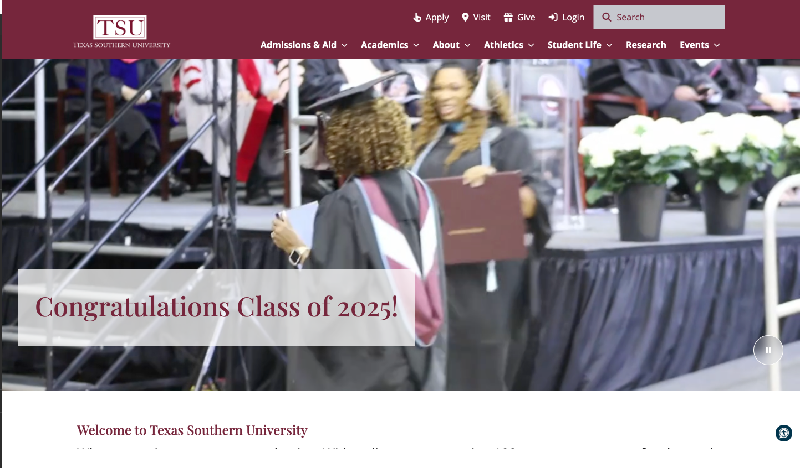
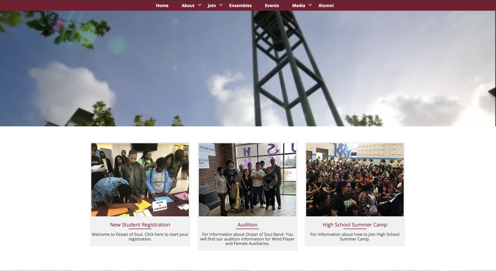
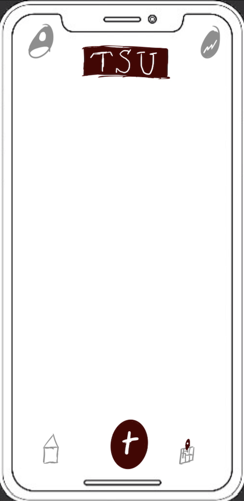
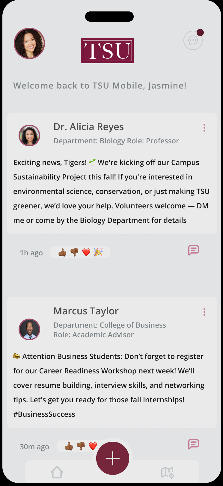
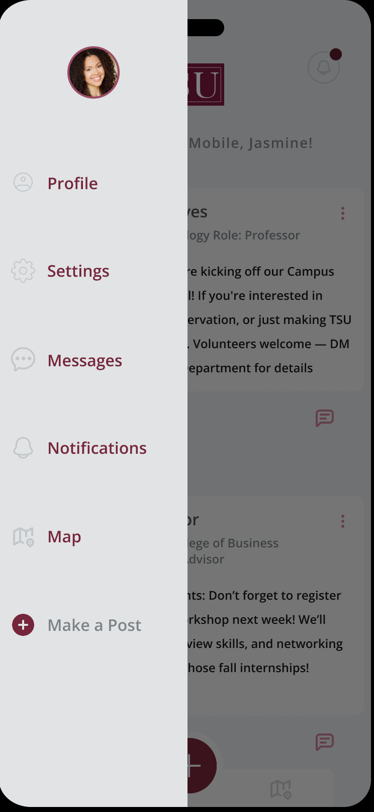

After meetings within the organization, there was a push to redesign the navigation of Texas Southern University's web pages. The change came in the form of new interactive buttons, as pictured in the "Ocean of Soul" navigation, which I was personally tasked with changing along with many other pages. The transitioned design changed from a passive header into an interactive, button-based system. This redesign provides clear visual cues and a more tactile experience, making page discovery intuitive and significantly improving the user's ability to explore the site's content.
OverView
While working with the Marketing & Communications team at Texas Southern University, I contributed to managing a 5,600+ page website, taking part in strategy meetings to align team objectives with institutional goals.
Tools
- Cascade
- Figma
- Zoom
- Modern Campus
My Role
UX/UI Intern
Duration
2 Semesters

Updating TSU Navigation


TSU Mobile Sketch and Prototype
After discussions with one of my team's Senior UX Designers, conversations began about developing a mobile app for TSU. He mentioned that he had previously proposed the idea in meetings but wanted a prototype to present to the team. I took the initiative to create mobile sketches and a functional prototype to serve as a visual aid for future discussions.


